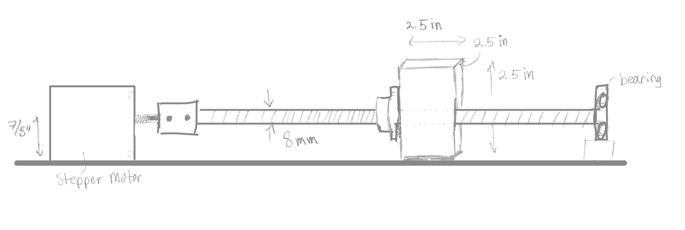
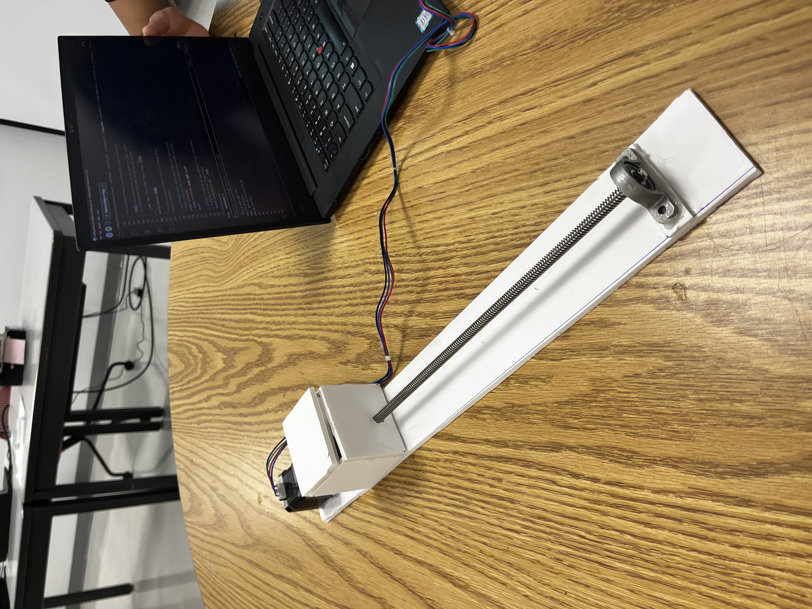
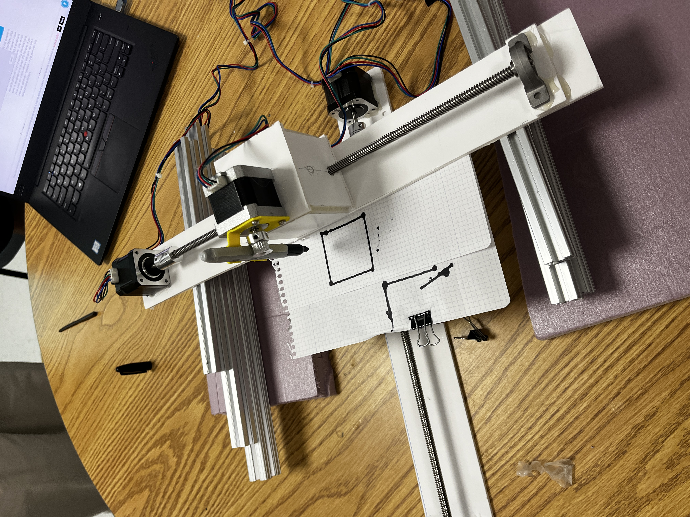
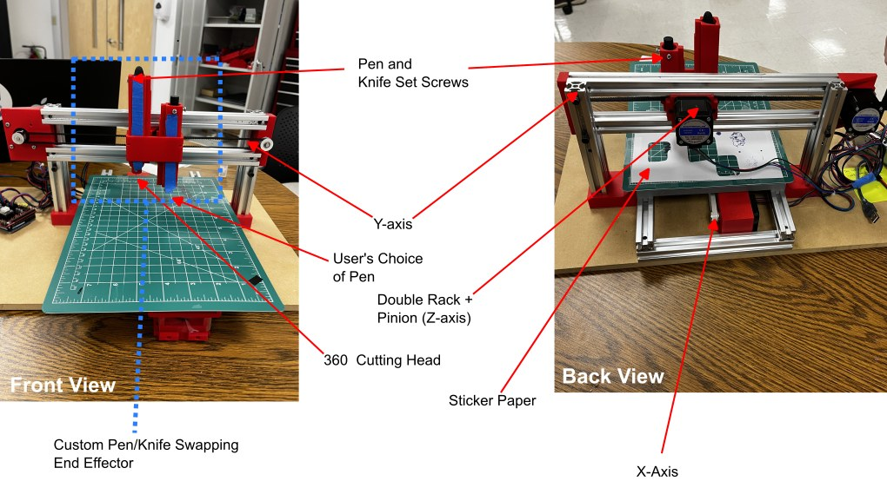
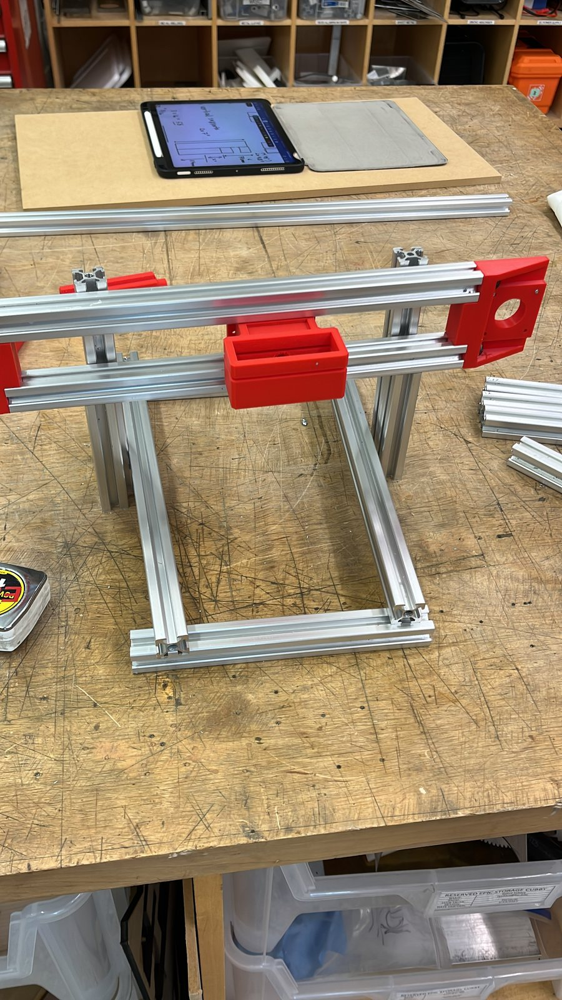
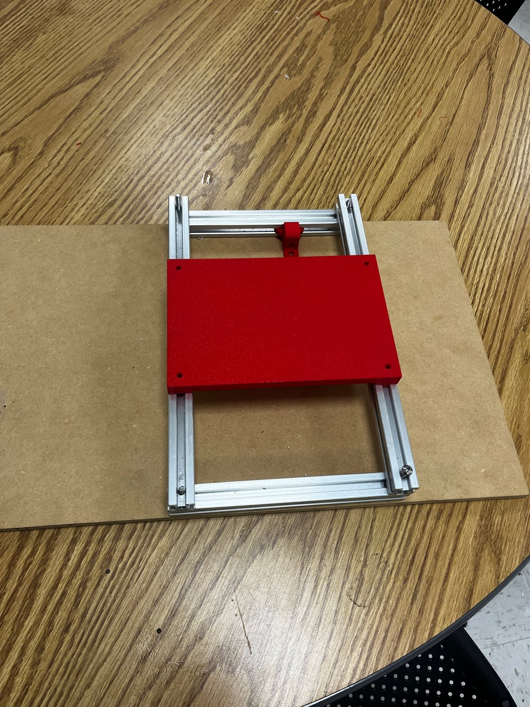
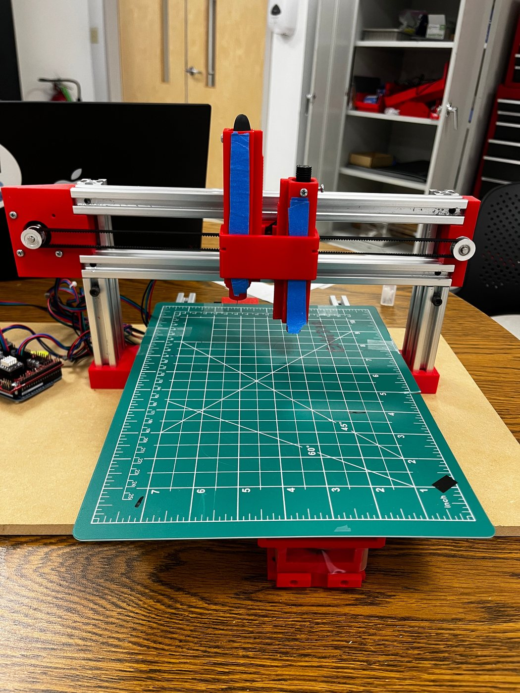

ENG ME 360 / ELECTROMECHANICAL DESIGN
Course project portfolio.
A detailed record of the design work completed for ENG ME 360 at BU. As the semester goes on, this website will reflect the insights, successes, and failures I am challenged with. I hope every reader finds one sentence or photo that inspires them to build their own electromechanical contraption.
ENGME 360 - Electromechanical Design
This course is a hands-on class focused on engineering principles, simulation and physical models in electromechanical design. Main topics include: Arduino sensing and control, principles of electromechanical design, CAE for simulation and prototype testing.
Course description: Over the course of semester, I will be working on two main projects in groups of 4, where we build electromechanical designs from the ground up.
Portfolio purpose: The following portfolio of the course is an overview of each of the two projects, with a brief narrative describing the objectives, design constraints, and results of each project.
- Design objectives and constraints
- CAD / conceptual design
- Analysis and simulation
- Fabrication and assembly
- Controls / sensing / actuation
- Testing, results, and iteration
Project 1 - Cartesian Motion System
A semester project focused on developing a general Cartesian motion system. The plotter exercise serves as the first prerequisite component of this larger system.
Plotter Exercise
The first exercise is a prerequisite to the larger Cartesian motion system. The work below is the first completed portion of the project.
Goal: 2-dimensional plotter to recreate sketches.
Objectives
- Design and build a one-dimensional linear stage.
- Manually control the linear stage using Arduino IDE.
- Combine a second linear stage to create 2D cartesian motion.
- Successfully recreate any drawing using the 2D plotter using the F-Engrave Gcode converter.
Constraints
- Foam board construction.
- Specific dimensions for proper pen mounting compatibility.
- Only two class periods to complete all steps before reporting the project in the portfolio.



By mounting a platform to the bottom linear stage and the pen mount to the upper linear stage, my team and I were able to create controllable 2D motion with drawing capabilities. We immediately ran into design challenges as our foam board construction, while adequate for quick prototypes, was not as structurally sound as more durable metal alternatives. We quickly determined that the motor torque was powerful enough to throw the linear stages out of alignment. Given those drawbacks, we eventually found a motor speed that could maintain alignment, while successfully completing any drawing we gave it. Now that the control has been established, our next steps will be to build a stronger foundation around the stepper motors using extruded aluminum.
Sticker Cutting Exercise
Building on the plotter exercise, this exercise turns the cartesian motion system into a working sticker machine: the same X-Y motion first draws a design in pen, then cuts it out with a knife.

Goal: Build a 2.5-degree-of-freedom cartesian motion machine to draw, and sequentially cut out, custom stickers.
Objectives
- Build a 2.5-degree-of-freedom cartesian motion machine.
- Draw custom stickers, then sequentially cut them out with the same machine.
- Produce unique sticker designs from arbitrary images.
Constraints
- Small enough to fit in a large bag.
- A minimum of 2.5 degrees of freedom.
- Constructed from aluminum 2020 extrusion.



Contributions
- Led a team of 4 to design and construct the linear components.
- Designed custom mounts in Onshape for the idler pulley and NEMA-17 stepper motors to control the X and Y linear stages.
- Leveraged AI coding tools to build a custom Python script using the OpenCV library to convert any image into a G-code sequence to first draw and then cut out the sticker with a specified offset.
- Ran assembly, prototyping, and troubleshooting sessions to achieve a working prototype.
Technical Details and Skills
- Onshape to build CAD parts and assemblies.
- Stepper motor control using Repetier Host.
- Rapid prototyping and integration of 2020 extrusion with custom 3D-printed parts.
Successfully created six unique sticker designs. The prototype was built to the design constraints, small enough to fit in a bag, with 2.5 degrees of freedom.
Course in progress — last updated October 2026. Further subsections will be developed throughout the semester.